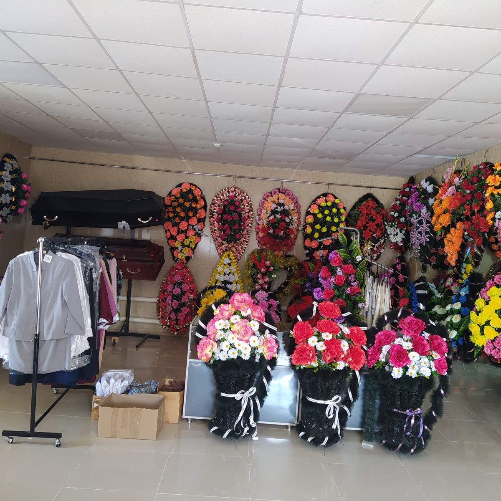
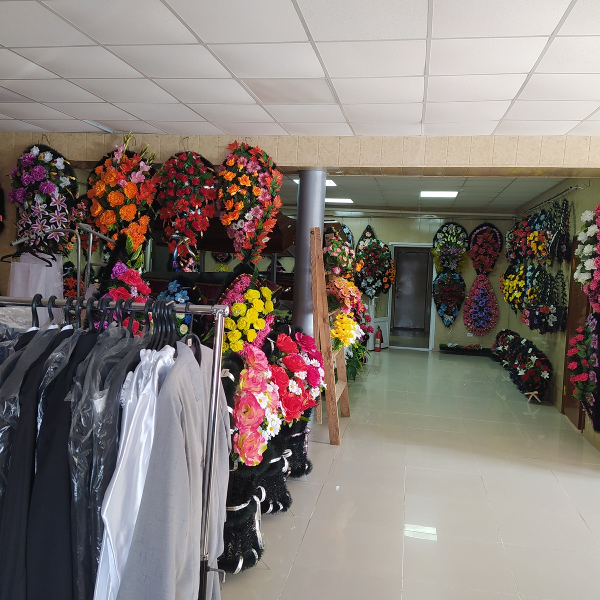
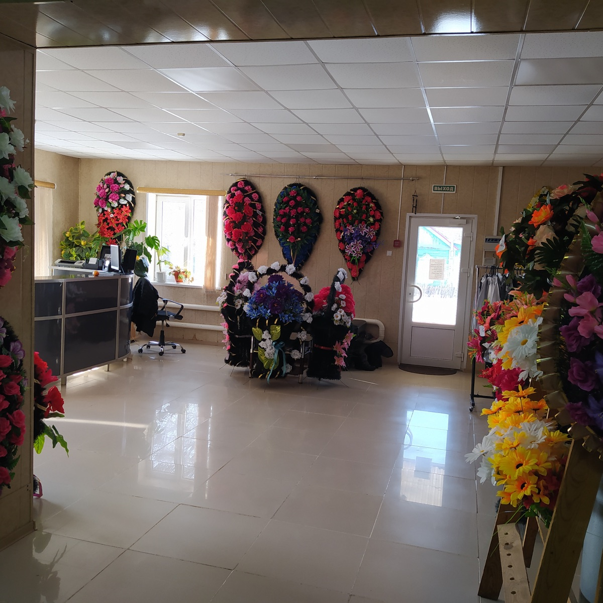
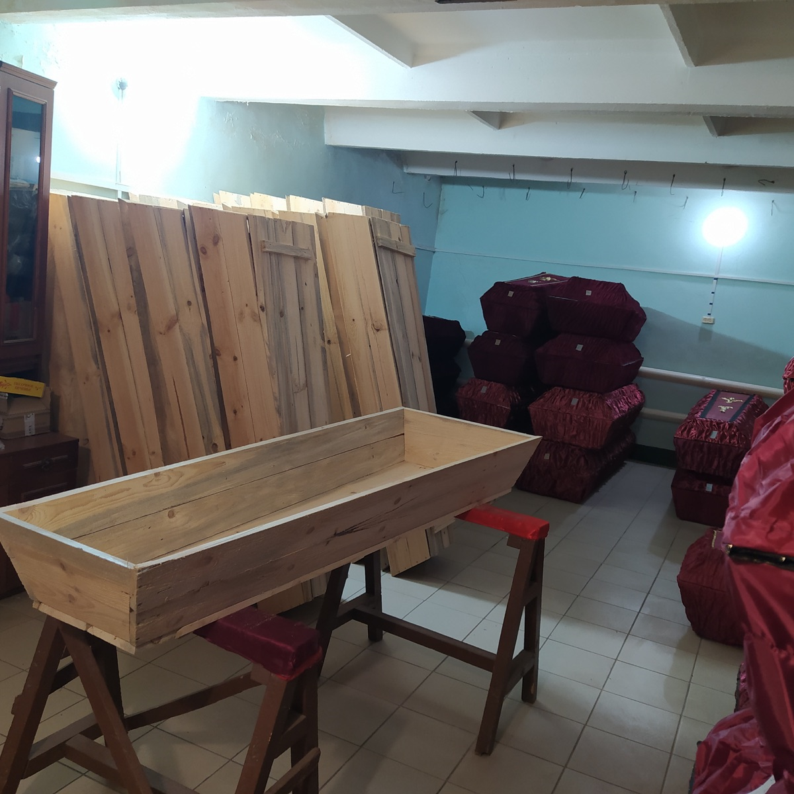
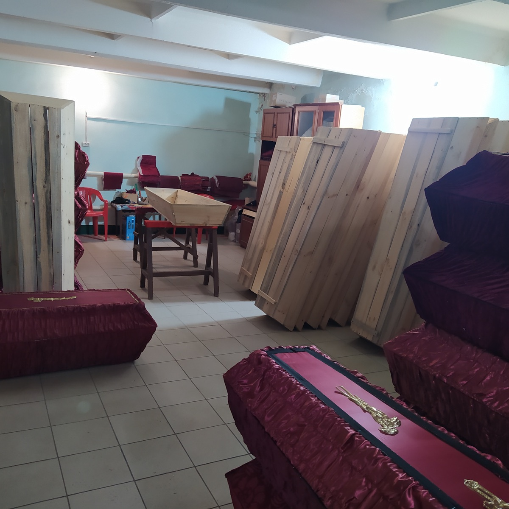
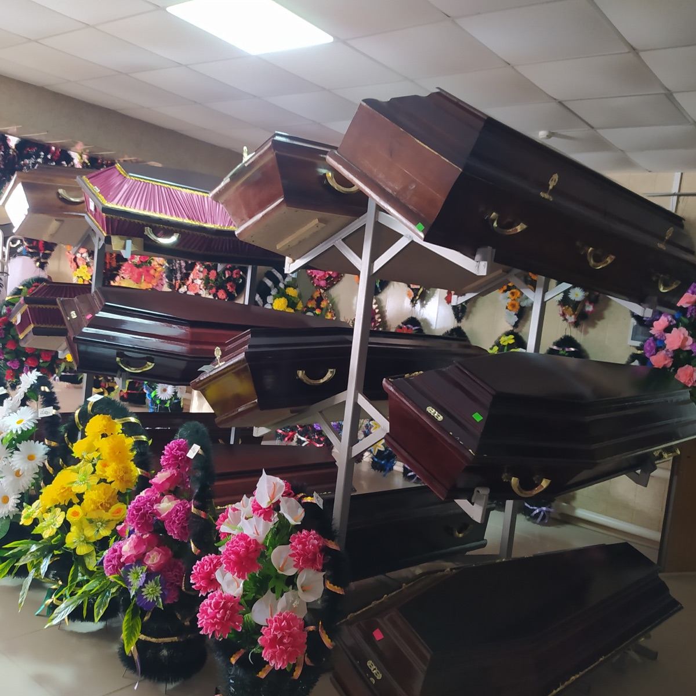
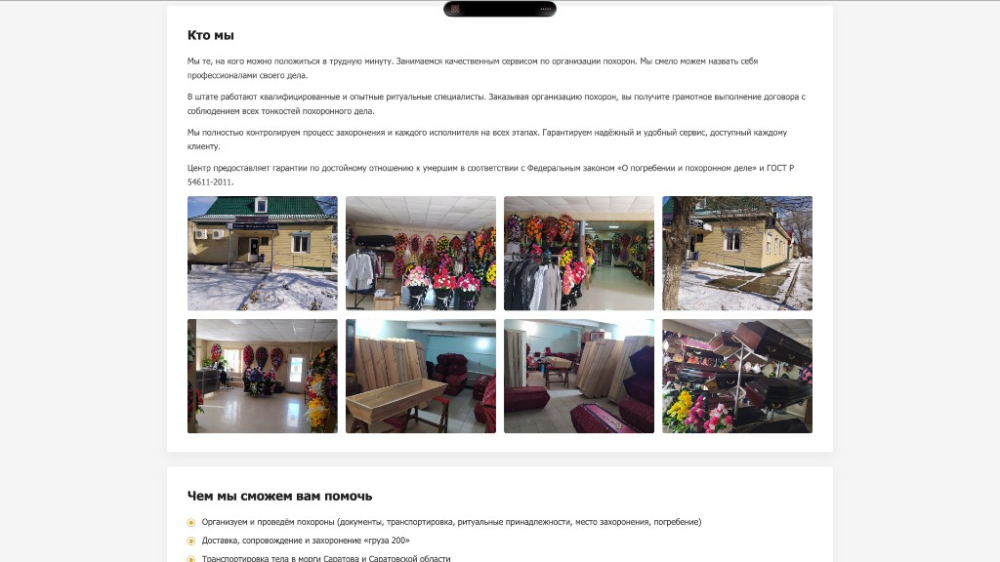
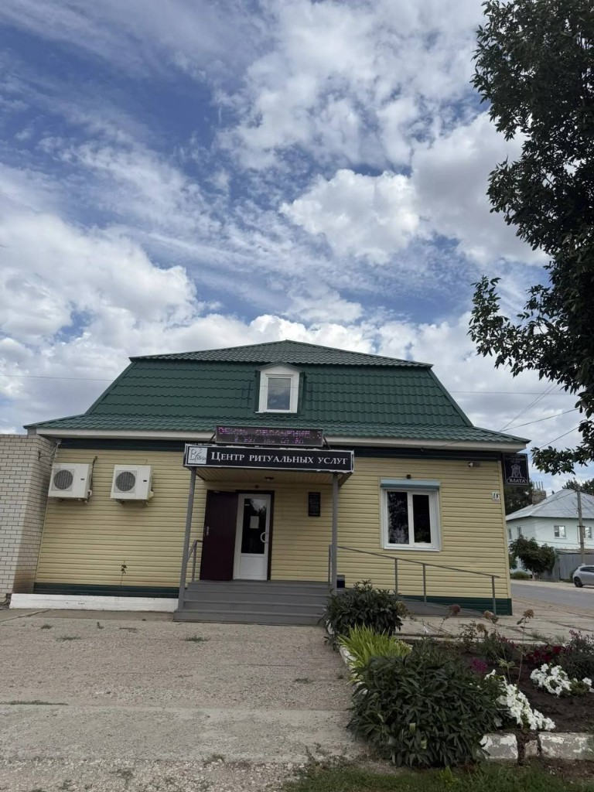
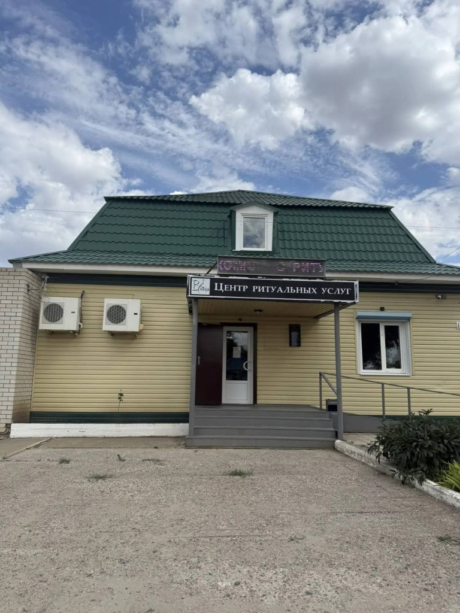
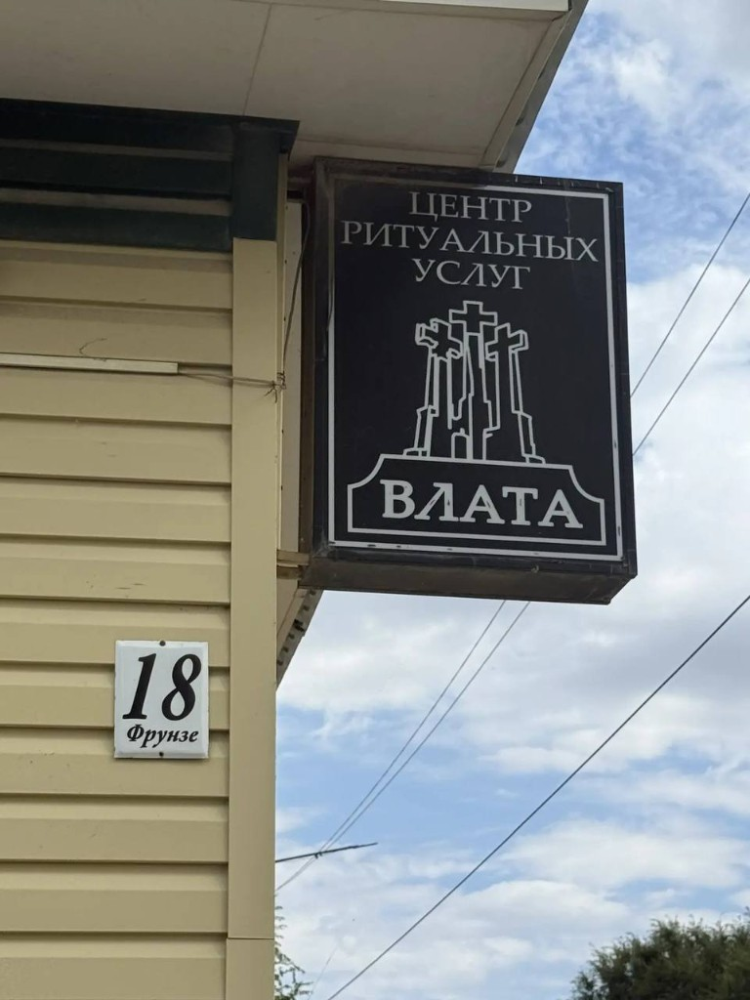

Более 27 лет
Работаем в г. Ершове и Ершовском районе
Более 1000 мероприятий
Организовали прощальные церемонии
Круглосуточно
Консультация и выезд агента в любое время
Кто мы
Мы те, на кого можно положиться в трудную минуту. Занимаемся качественным сервисом по организации похорон. Мы смело можем назвать себя профессионалами своего дела.
В штате работают квалифицированные и опытные ритуальные специалисты. Заказывая организацию похорон, вы получите грамотное выполнение договора с соблюдением всех тонкостей похоронного дела.
Мы полностью контролируем процесс захоронения и каждого исполнителя на всех этапах. Гарантируем надёжный и удобный сервис, доступный каждому клиенту.
Центр предоставляет гарантии по достойному отношению к умершим в соответствии с Федеральным законом «О погребении и похоронном деле» и ГОСТ Р 54611-2011.










Чем мы сможем вам помочь
- Организуем и проведём похороны (документы, транспортировка, ритуальные принадлежности, место захоронения, погребение)
- Доставка, сопровождение и захоронение «груза 200»
- Транспортировка тела в морги Саратова и Саратовской области
- Санитарные мероприятия по сохранности тела
- Оформление справок и документов о смерти (в пределах компетенции)
- Помощь в получении социального пособия на погребение
- Транспорт для родных и близких (катафалки 2–6 мест)
- Ритуальные товары: гробы, кресты, венки, текстиль, одежда, церковный набор
- Бесплатные консультации круглосуточно
- Психологическая поддержка родным и близким
- Выезд ритуальных агентов
- Прощальный зал с местом для хранения тел
Наши гарантии
- Понимающие ситуацию специалисты ритуальной службы «Влата»
- Бесплатная консультация по телефону круглосуточно. Выезд специалиста в любое время суток
- Гарантия неизменности цен в прайс-листе и договоре
- 100% гарантия высокого качества услуг
- Дорожим репутацией и своей историей
- Гуманное и вежливое отношение — наше кредо
Памятники — отдельная организация
«Влата» организует похороны. Изготовление и установку памятников выполняет партнёр «Данила Мастер» — другая организация. При полном комплексе ритуальных услуг у «Влата» выдаётся скидочный купон 5% на изделия из гранита или мрамора у партнёра.
Перейти к «Данила Мастер»